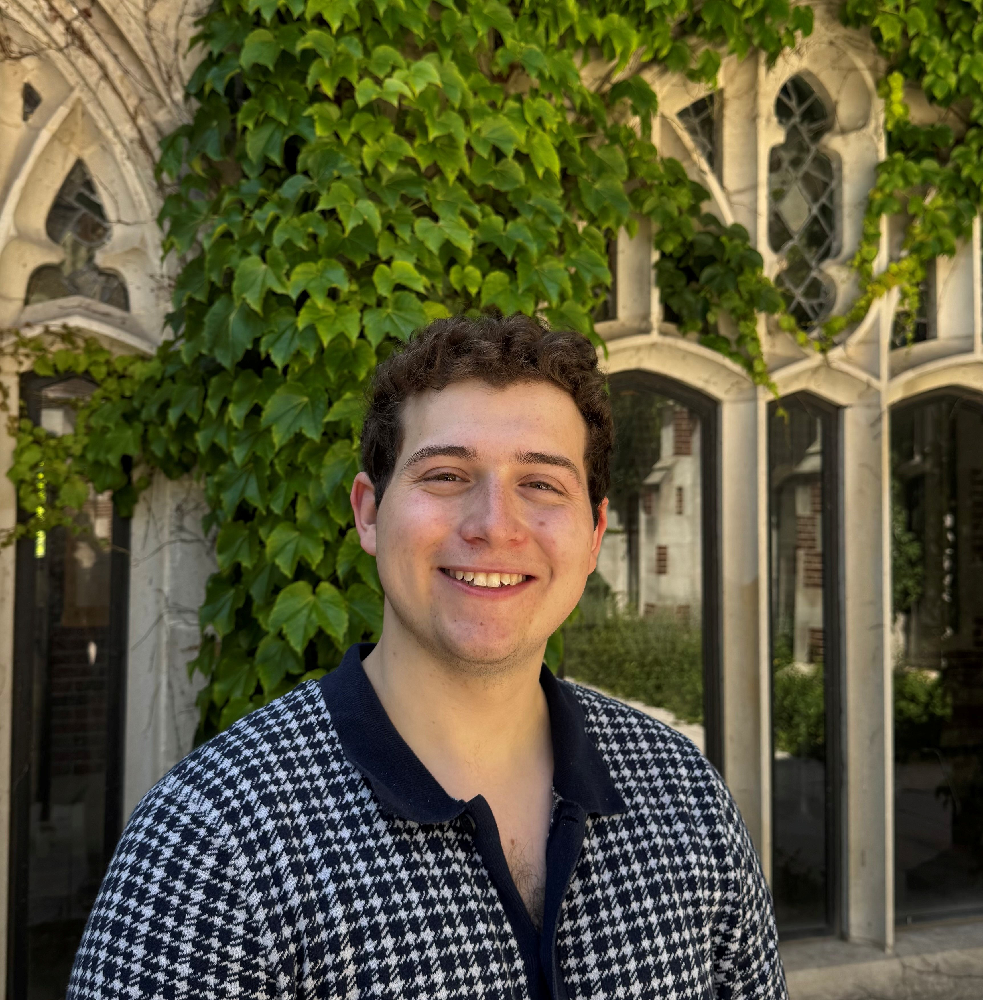

I'm an M.S. student in Mechanical & Aerospace Engineering at Cornell University, researching underwater acoustics metamaterials, soft biomimetic robotics, and redox-flow battery system integration.
Current Updates
Work
Projects in acoustics, robotics, and product design.
Acoustics
PLACEHOLDER.
Product Design
Competitive sailing hardware with a three-layer elastomeric architecture — polyurethane body, nylon rope core, and woven polymer mesh sleeve. Patent pending.
Robotics / Electronics
PLACEHOLDER.
Research
Papers, reports, and technical documents I've contributed to.
Background
A bit more on who I am and what drives my work.
I'm a graduate student in Mechanical & Aerospace Engineering at Cornell University. I do my research at the Organic Robotics Lab under Prof. Robert Shepherd where I am currently working on a new subsystem for the PSIB (Poly Sulfide Iodide Battery) fish project currently ran by Douglas Palumbo. Nicknamed "RCADE" this project lies at the intersection of heat transfer and acoustics to improve the capabilities of this biomoimetic soft-robotic fish.
Before graduate school I completed my B.S.E. at Case Western Reserve University in Cleveland, Ohio. There I studied under Prof. Chase Cao to develop new actuator designs that implimented liquid dielectric elastomers (Peano-HASEL actuators) to create biomimetic and rotational motion. I also studied under Prof. Angela Dixon to create the Modular Microfluidic Incubator that allowed nose-on-chip devices to be stored in safe environments while nasal deposition experiments took place.
Outside of research I spend time playing Dungeons and Dragons, weightlifting, and playing indie video games with friends. I am a Hefeweissen lover and a cilantro hater and can often be found screaming at the fire alarm after cooking a meal. I love the outdoors and enjoy hiking and camping when I find the time off to do so. Most of all I love my friends and I am always willing to try something new with someone at my side.
I'm currently applying to Ph.D. programs for Fall 2027 and open to research collaborations and internships in acoustic engineering, embodied energy, and soft robotics.